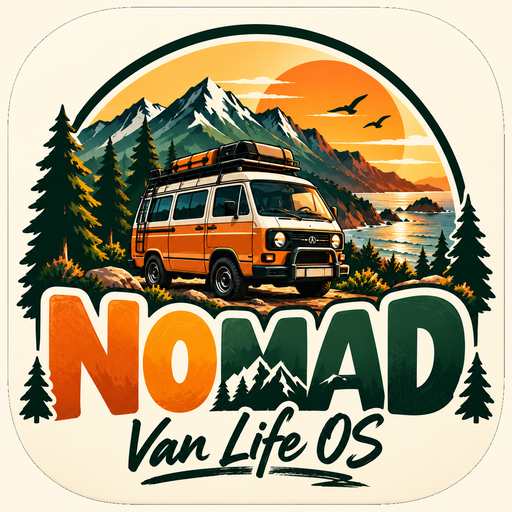
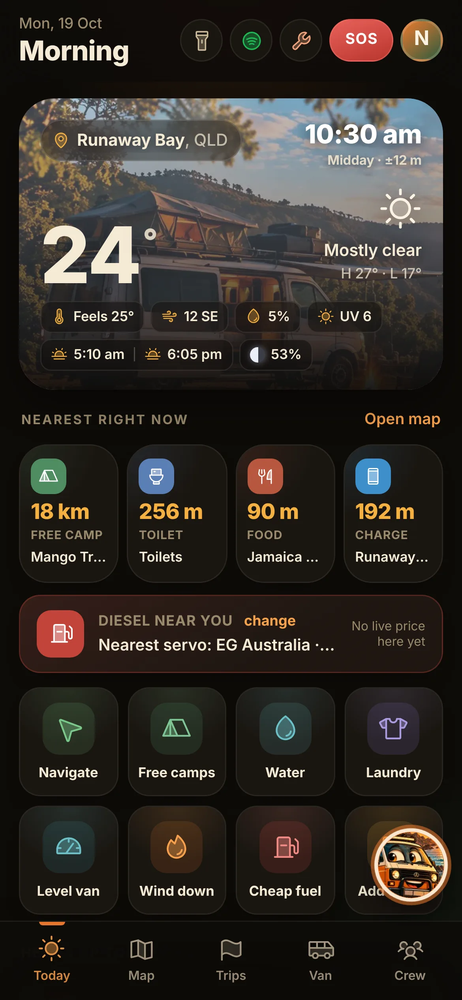
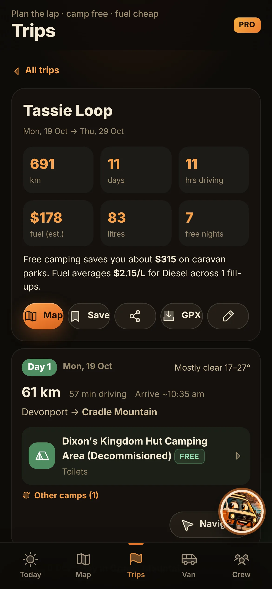
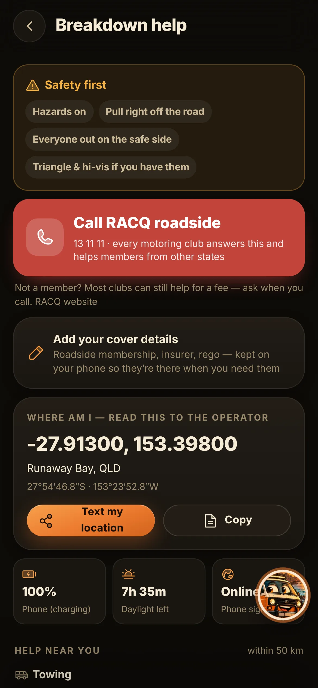

NOMAD
Van Life OS · Australia
Free
No app store needed
No app store needed
FreePrice
258kPlaces
OfflineWorks
<3 MBSize



Your road-trip companion
Everything you need on the road in Australia, in one app. Find a free camp for tonight, the closest toilet, water and showers, the cheapest fuel near you, and help fast if the van breaks down. Built by a van lifer, for van lifers.
What you get
- ⛺Free camps & 258,000 placesCamps, toilets, water, showers, laundromats, dump points, Wi-Fi, hospitals.
- ⛽Live fuel pricesCheapest servo near you, right on the home screen.
- 🗺️Trip plannerLap-of-Australia routes with a camp every night and fuel costs worked out.
- 🛠️Breakdown helpRoadside assist, mechanics, tyres and towing near you, one tap to call.
- ☀️Weather, tides & skyWind, rain, UV, tides and stargazing for where you're parked.
- 🔥The crewChat with other travellers and share spots.
Why no app store?
One tapInstalls in seconds, no account or password.
TinyUnder 3 MB, won't eat your storage.
Always freshUpdates itself in the background.
Works offlineMaps and spots stay when signal drops.
Information
DeveloperNOMAD Van Life
CategoryTravel · Navigation
Works oniPhone, Android, desktop
PriceFree · optional Pro
PrivacyNo account · data stays on your phone